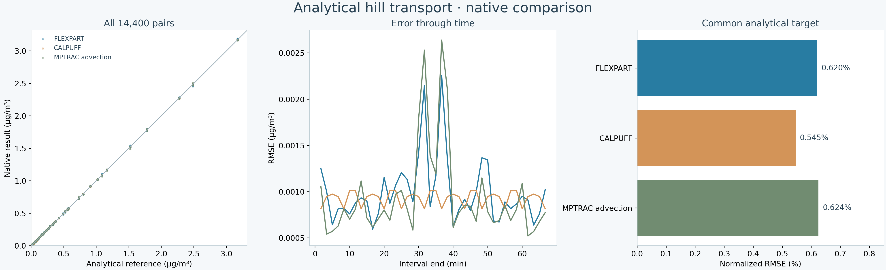

A hill.
A known transport solution.
A 1,000 m hill · One 1 kg initial puff · 4,000 seconds
Native results against the same analytical target: FLEXPART 0.620% · CALPUFF 0.545% · MPTRAC advection 0.624% normalized RMSE. This verifies a prescribed advection problem, not real mountain-weather prediction.

Every geometric axis uses kilometres and a measured 1:1 physical aspect ratio. No vertical exaggeration. The same camera follows the puff in all panels. Maps show 500 m AGL; sections follow y = 6 km. Colour range: 0–4 µg/m³.
The three-dimensional test
A smooth Gaussian hill changes the physical height of the flow. Wind is prescribed to be tangent to the terrain: parcels climb the upwind slope and descend the lee slope while retaining their height above ground. The initial puff has horizontal standard deviations of 400 m and vertical standard deviation of 100 m, centred 500 m AGL. There are no later emissions, heat rise, chemistry or deposition.
Independent analytical reference
The terrain-following transformation has unit Jacobian. For η ≥ 0, a reflected vertical Gaussian gives a nonnegative 1 kg puff with no flow through the ground. Here φσ is the normalized one-dimensional Gaussian density; x₀ = 10 km, y₀ = 6 km and η₀ = 500 m.
Quantitative comparison uses 360 fixed 250 × 250 × 50 m terrain-following voxels and all 40 consecutive 100 s means: 14,400 pairs per method. Gaussian CDFs give the spatial volume integrals; independent time quadrature at 12 and 24 nodes agrees to within 2.7 × 10⁻¹⁵ µg/m³. Zero predictions and all fixed cells are retained.
Measured errors
| Native calculation | RMSE · µg/m³ | NRMSE | MAE · µg/m³ | Max |error| · µg/m³ |
|---|---|---|---|---|
| FLEXPART | 0.0010581 | 0.620% | 0.0001989 | 0.027579 |
| CALPUFF | 0.0009312 | 0.545% | 0.0001660 | 0.010856 |
| MPTRAC advection | 0.0010661 | 0.624% | 0.0001883 | 0.033685 |

These close scores do not rank the methods for real pollution forecasts. They include numerical sampling and observation-operator effects. Particle-number and grid-convergence studies have not been performed for this new case.
What actually ran
- FLEXPART: the existing full native FLEXPART-WRF research driver, unchanged executable; 65,536 shared initial parcels loaded through its supported initial-particle interface. Turbulence is disabled. Manufactured WRF-format inputs provide a 200 m sampled hill and its prescribed physical wind. The admitted 4,000 s run took 434.32 s.
- CALPUFF: the original native driver reads one deliberately constructed Gaussian initial puff through its supported restart reader. This is an artificial test initial condition, not a claimed continuation of a previous pollution simulation. Manufactured CALMET-format U/V fields are exactly 5/0 m/s. MCTADJ = 3 and PPC = 1 represent fully terrain-following motion. CALPUFF does not advect this puff using the same physical-W equation as the particle methods.
- MPTRAC: native module_advect with a 200 m sampled wind field and the same initial parcels. The complete production driver is not exercised. A required concentration-observer run preserves all 41 saved native particle-state arrays byte for byte. No alternative trajectory solver was substituted.
Particle methods use matching 10 s trapezoidal sampling. MPTRAC's stored right-end sums are converted by the exact endpoint identity; no physical integration or parcel position is changed. CALPUFF uses its native time/space integration and predeclared 3 × 3 × 3 voxel cubature.
Mass, trajectory and diffusion checks
FLEXPART retains exactly 1 kg and exact zero in the four non-source species at every saved particle state, with no terrain penetration. MPTRAC retains 1 kg and passes the corresponding trajectory/observer checks. CALPUFF ends with one 1 kg puff, zero later source emissions and no depletion or outflow.
FLEXPART's worst saved-state AGL trajectory RMS error is 0.663 m against the original shared parcel characteristics; MPTRAC's RMS error over all saved states is 0.641 m. The first is a worst-time statistic and the second is pooled over time, so they are not presented as a like-for-like ranking.
CALPUFF rejects an exactly zero turbulence minimum. The declared null-dispersion limit uses 10⁻⁶ m/s; it is not mathematically zero diffusion. Actual final widths are σy = 400 m and σz = 100.000038 m, passing the independently fixed 0.01 m width-change gate. This applies to this large initial puff and short passive test, not a recommended atmospheric turbulence setting.
Display and preserved unsuccessful checks
The movie uses raw native particle voxel fields and directly computed CALPUFF observation planes. CALPUFF's point planes and particle cell means are distinct observation operators; the error table instead uses the original common 360 voxel means. No rejected Gaussian reconstruction is used to draw CALPUFF. Concentration scalars and positions are interpolated before rendering each frame, with prescribed-flow alignment to avoid artificial pulsing. There is no RGB frame mixing, crossfade or stacked-frame smoothing.
An early FLEXPART input omitted the Mercator northing reference at 45°N. Its full run retained 1 kg in particles but integrated to about 0.5 kg on the intended Cartesian output grid. The entire failed case is preserved. Coordinates were corrected and the case rerun; concentrations were never multiplied by two. Earlier metadata/field-input failures are also preserved.
The first CALMET hill objective analysis altered the desired uniform wind. Those outputs remain separate and are not admitted as identical forcing. The final input is explicitly manufactured CALMET-format meteorology with prescribed U/V, not a CALMET mountain-wind prediction. Native vendor equations and input guards remain unchanged. An analytical Gaussian display reconstruction also failed its original 0.5% comparison gate and was replaced by direct native observation planes without changing that gate.
Only tiny negative display-interpolation roundoff is bounded in the renderer; original fields and all scientific errors remain unchanged. All unsuccessful tests, raw native files and model dependencies are retained locally. Licensed CALPUFF source and executables are not redistributed.
Reproduce and inspect
This is a kinematic terrain-advection verification. It does not establish mountain-wind dynamics, turbulence, diffusion, building wakes, plume buoyancy, chemistry, deposition or regulatory exposure accuracy.